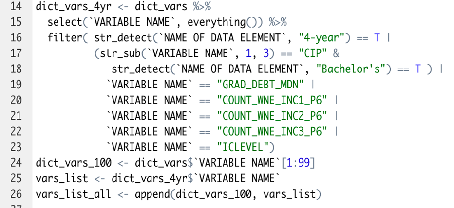
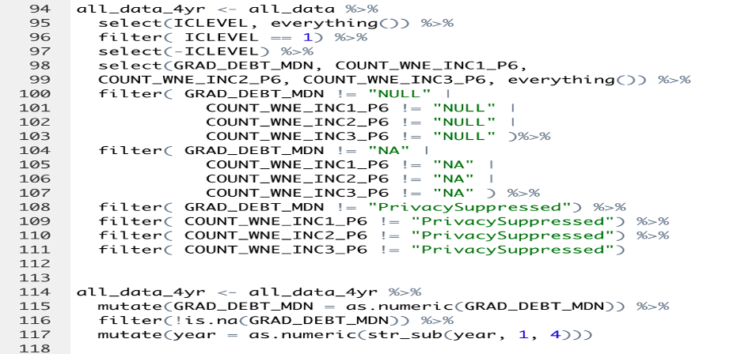
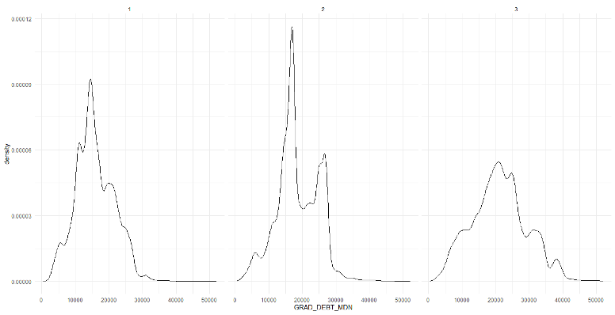
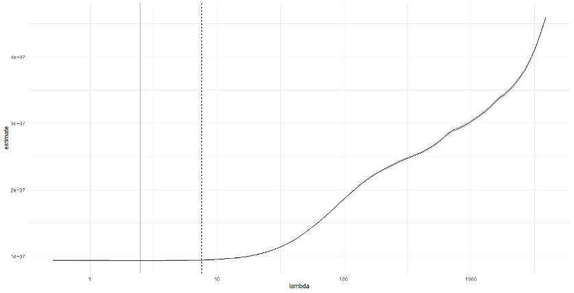
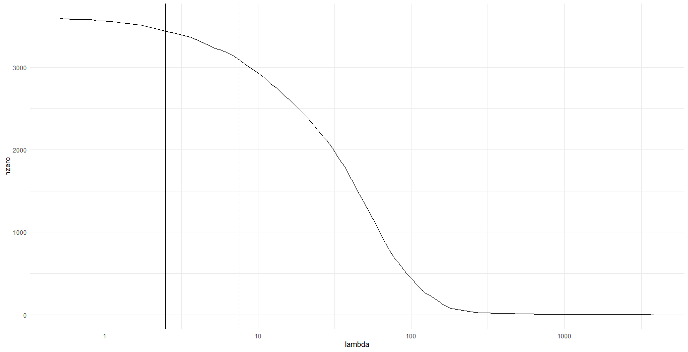
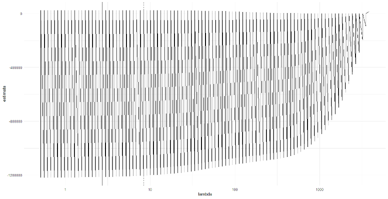
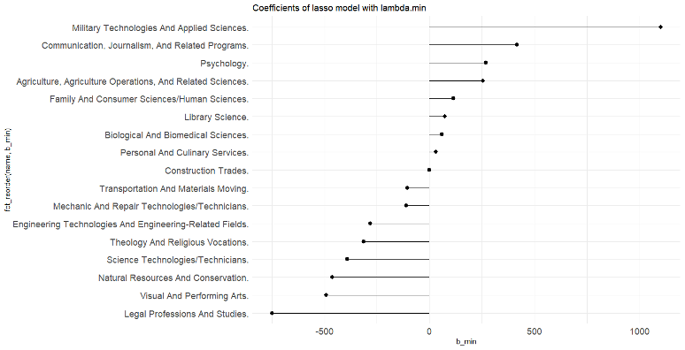
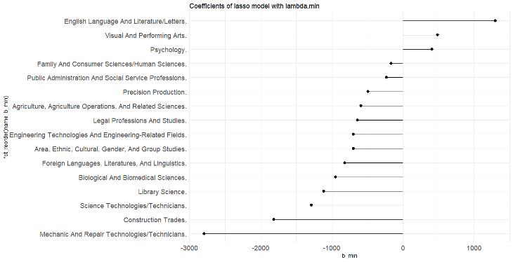
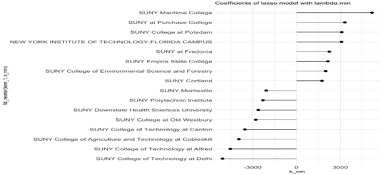
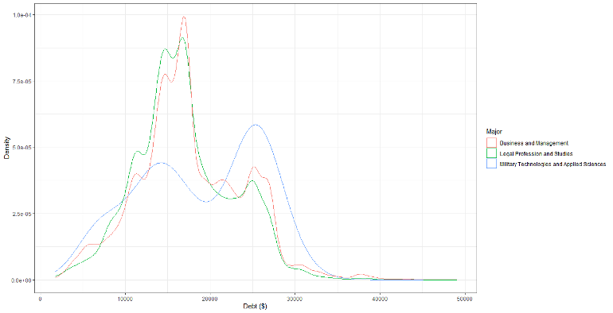

In the United States, college is expensive due to several reasons, some being the growing demand, rising financial aid, lower state funding, the exploding cost of administrators, and the bloated student amenities packages. Overall, students now owe twice as much as they did a decade ago to receive a college education. These increases in college tuition leave many students in debt after they graduate. Our real world issue and motivation for the project is to look at student debt based on the major they studied. We also want to see if there is a correlation between the major studied and the amount of debt after they graduate.
The data in the College Scorecard Files provides an array of information we will use to create a lasso regression model. The lasso regressions will show the relationship between college students’ cumulative debt at graduation and the major they studied. We will also cross examine which students in SUNY colleges graduate with the most debt.. This will also show us which SUNY college has the most debt based on which college they attended. After analyzing this data, we will be able to make recommendations on which majors graduate with the least student debt and which majors have the highest debt.
Data Weblink: https://collegescorecard.ed.gov/data The data we will be using for this project is the college scorecard dataset, derived from the U.S. department of Education. Within this data set, are institution-level data files ranging from the years 1996 to 2020, containing the aggregated data from institutions across the country. Some information that can be found on each institution includes things such as enrollment, student aid, costs, and student outcome. With this dataset, we are offered a wide range of topics to choose from, and plan on evaluating our aggregate data through the creation of models for presentation. Being that the dataset provided is large, we will have to spend the majority of our time cleaning it to make our models as effective as possible. Some files that will be useful for cleaning the dataset include the Data Dictionary xlsx file, Technical Documentation for Institution-Level Data Files, and Technical Documentation for Data Files by Field of Study. Within the Data Dictionary excel file, are important variable names which will help us navigate through the dataset, and break it down into a more efficient set. The technical documentation pdfs will provide us with greater context for the data, which will also become useful in cleaning the dataset, and narrowing down what will be useful in our models.
First when cleaning the dataset we had to merge all the data excel files from 1996 to 2020 into one mega dataset and one mega dataframe. To do this we created a code to combine the files based on the variables, and this created a combined csv file in which we can see all the data ranging from 1996 to 2020 on one dataframe.
Figure 1: R Code 1 for cleaning the data 
Then as seen in figure 1, we created a code based on the variables we wanted to use. Those variables being “4-year” (4 year college), “CIP” (major studied), “Bachelor’s” (student who obtained a bachelor’s degree), “GRAD_DEBT_MDN” (grad debt median), and “ICLEVEL” (private or public college). After running this code we only saw data in the data frame that were these variables.
Figure 2: R Code 2 for cleaning the data 
After cleaning the data based on the variables we wanted to use, then seen in figure 2, is the code we used to remove all the Null, NA, and Privacy Suppressed variables. We wanted to remove all these variables because this data on which the data set did not have any information or was private. After running this code we were able to start to build our lasso regression model.
The economic and business ideas behind our models lie within the fact that student debt is a growing national crisis that has gotten out of control in the last decade or so causing financial harm to many Americans. With confidence, almost everyone who will come to read this article can say that at one point or another they know of or knew someone who has complained at least once about their recurring student loan payments. As a result, we wanted to take a deeper dive into some of the factors contributing to student debt and also evaluate things like what majors would have the least amount of debt and even what institutions you should attend for a minimal amount of debt.
According to EducationData.org, in the year of 2022 the average federal student loan debt balance is $37,014 and approximately 43.4 million borrowers have federal student loan debt. These numbers are nothing to be proud of as it is a massive issue for not only individuals, but also our economy as a whole. From these statistics, it is evident that we have and will continue to see things such as decreased consumer spending and business growth throughout the United States in the coming years. This stems from the fact that if our citizens are too busy worrying about their college payments from many years ago, the chances are they will not have enough discretionary income to be going out to the movies, concerts, sporting events or anything like that. The models that we used did not include any theoretical models mainly because of our time constraint on the project itself. We decided to just use our empirical models which include the Lasso model and made many conclusions off of those results.
After looking at our data and trying to figure out what model would be best, we decided that the Lasso model would be the best route for us to go as a group. This decision came pretty easily after narrowing down many options to our two choices, the Linear regression model and the Lasso model. While it was not easy to pick, a few major components led to our decision and the big contrasting elements between the two. Whereas Linear regression gives you regression coefficients as observed in the dataset, The Lasso regression allows you to shrink or regularize these coefficients to avoid overfitting and make them work better on different datasets and that is exactly why it worked perfectly for the college scorecard data.
In short, the Lasso model is like a Linear regression model, but it uses a technique called “shrinkage” in which the coefficients of determination are shrunk towards zero or in simpler terms, when data values are shrunk towards a central point, like the mean. The reason for doing this is to minimize the possibility of overfitting or underfitting the data and adding a penalty term to the RSS according to busigence.com. Additionally, Lasso regression is often used as a form of model and variable selection so after seeing our data with hundreds of different variables it was a no brainer choice for our group. This model has a very high success rate when the dataset shows high multicollinearity, which occurs when two or more independent variables are highly correlated with one another in a regression model as we did. It can also be used when you want to automate variable elimination and feature selection.
The variables we used consisted of our independent variables and dependent variables. We decided that graduation debt was our dependent variable and our independent variables included things like majors chosen, type of institution students attended (public, private or private non profit) and geographical location of the school just to name a few. Ultimately, graduation debt was our dependent variable because that is what we were most concerned with and wanted to see how it was affected after certain other factors came into play.
Below are our visualizations of our results found through our research. We have created multiple lasso regression models that show slightly different correlations. All of our regressions involved debt among students who completed four year bachelor degrees across the US.
Figure 3: Debt vs Density based on Institution Type 
The visualization above shows the debt among students based on control groups of their types of school. The different control groups are types of institutions. Control Groups: 1 = Public 2 = Private nonprofit 3 = Private for-profit The results show that private for-profit schools leave students in the most debt after graduation. The students who graduate from public schools are left in the least amount of debt, and private nonprofit schools are in the middle. This is not very surprising as public schools tend to be less expensive than private schools.
Figure 4: 
Looking at Figure 4, you can see the evaluation of our lambd, which measures the accuracy of our beta estimates. As the lambda increases, our y axis values also increase at varying amounts. Though y axis values are consistent prior to a lambda of 10, there is a sharp increase following a lambda of 50 and an even greater increase following a lambda of 100.
Figure 5: 
This figure shows that as the lambda increases, the trend in nzero changes slope to forecast the accuracy of our models. The reason why this is important, is because our analysis is heavily reliant on accurate estimates, all of which can be better measured by the beta estimates. When the lambda is less than 50, we can see that the nzero value is different from when the lambda is over 100. As the lamda continues to increase, our nzero eventually reaches 0, which further proves the accuracy of our models.
Figure 6: 
In Figure 6, we are showing the results of our data which shows that as lambda increases, our estimate approaches zero. This trend continues as the estimates increase over time. When Lambda equals 0, then the Lasso Regression Line will be the same as the Least Squares Line. As our Lambda increases in value, the slope gets smaller and eventually reaches 0. As the slope gets smaller, our beta estimates become more accurate, therefore our estimates are accurate.
Figure 7: Debt based on Major with All Controls 
This model shows the amount of debt students with certain majors are left with post graduation with a beta value. The Beta value in our regression is the estimates of debt for each respective major offered by schools across the US. As seen above, students with a bachelor’s degree in Military Technologies and Applied Sciences accumulate the most amount of debt after completing four years of college by a landslide. On the other hand, students with a bachelor’s degree in Legal Professions and Studies have the least amount of debt. This was interesting information for us to discover as none of us thought Military Technologies and Studies would be left in the most amount of debt.
Figure 8: Debt based on Major with No Control for College Characteristics 
This figure shows the debt among students based on their major, but has no control for college characteristics. With none of these control groups, students with a Bachelor’s in English Language and Literature/Letters are in the most debt and Bachelor’s in Mechanic and Repair Technology/Technicians are in the least amount of debt.
Figure 9: Debt based on SUNY Institutions 
The lasso regression above shows debt students are left in who attend SUNY schools. Unfortunately, our data does not include our own institution, SUNY Geneseo, but it still shows some useful information. Students who attended SUNY Maritime are left with the most amount of debt, while students who attended SUNY College or Technology at Delhi are left with the least amount of debt.
Figure 10: Debt based on Major for Most Debt, Least Debt, and Business Majors 
We thought it would be interesting to include a visualization that showed students who graduated with Business majors compared to Military Technology majors and Legal Profession majors. This is because our group consists of all Business majors. As seen above, Business majors are in slightly more debt than Legal Profession majors, but still much less than Military Technology majors.
As a whole, our research and machine learning models created accurate forecasts which were crucial in the conclusion of our findings and displayal of accurate data in presentations. The main findings of our machine learning models was that the amount of debt students are left with after schools varies greatly by the education which is offered specific to that of schools with Military Technologies and studies. Military technologies and studies. Military Technologies and studies is a program that focuses on the various engineering majors which are involved in military technology. Our models also show that degrees in legal professions and studies have the least amount of debt.
Brief summary of the research Our studies were conducted efficiently and effectively to create accurate machine learning models in order to display how post-graduate debt varies depending on the majors/education which is offered at each institution across the country. Though our data was conclusive, and we were able to determine that the degree with the most amount of debt was Military Technology and Studies, while the major with the least amount of debt was Legal studies, there are some things that we could do in the future to further develop our research.
Limitation of the research One of the major limitations of our research was that we were forced to sift through a massive dataset in order to create our models. When funneling data, it is natural to eliminate values in order to make your models relevant, and easily viewable; however, one of the major limitations of data cleaning is that it could lead to error in forecasts if the wrong data is removed from the model. Though we were diligent in our cleaning process, human error is something that is worth considering when data cleaning, especially when the dataset is so large. Another limitation which we faced was in accordance with how the data was able to be presented. Due to the final amount of data being so large, despite the cleaning process, our models were often forced to be more complex than what would have been desired.
Future direction of the research In the future, we would like to take a deeper look into the cleaning process of our data, and try to better understand the forecasted results that we received following the creation of models. The massive amount of data made our entire process very complex, and had we spent more time cleaning it we would have likely been able to create even more comprehensive models. Another factor that we would like to consider in the future is how much debt each student faces post-grad at each college. Though we were able to display college debt dependent on majors offered, it would be incredibly useful if we could display these results on the individual level, rather than looking directly at the universities.
As a whole, our data was clean enough so that we could create models which would be understood, despite the complexity of the initial dataset. The entirety of this research process was an incredible learning experience, and we feel as though each of us is walking away having learned more about data cleaning, and the topic of debt dependent on college.
Hanson, Melanie, and Fact Checked. “Student Loan Debt Statistics [2022]: Average + Total Debt.” Education Data Initiative, 15 May 2022, https://educationdata.org/student-loan-debt-statistics.
Harsh. “Shrinkage Methods in Linear Regression.” Busigence, http://busigence.com/blog/shrinkage-methods-in-linear-regression/.